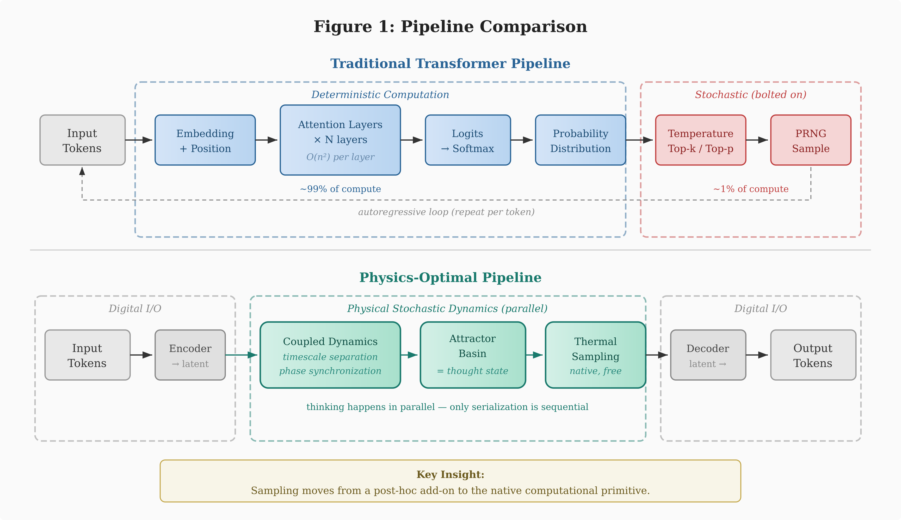
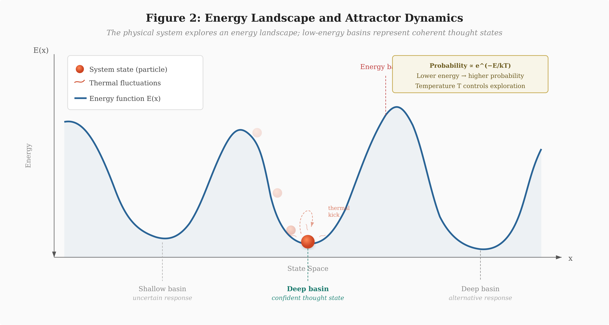
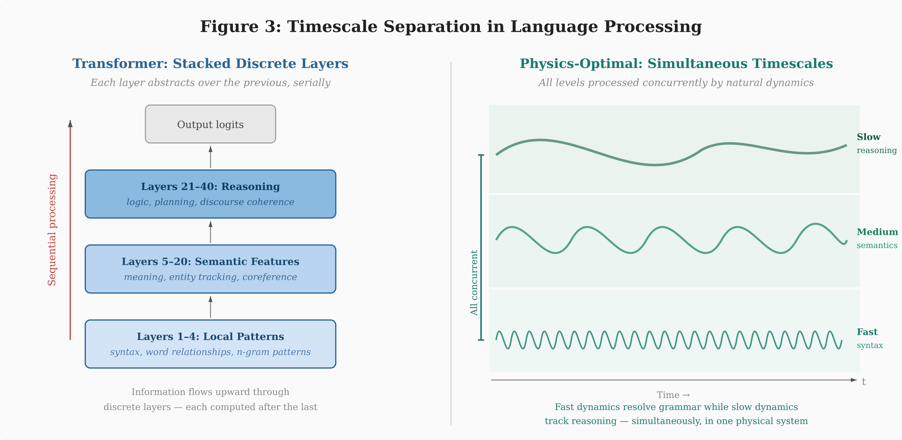
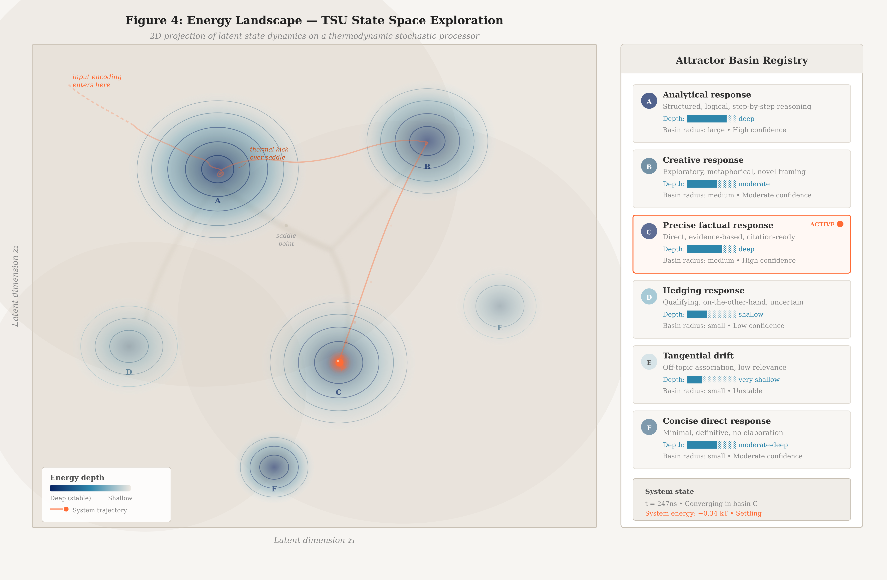
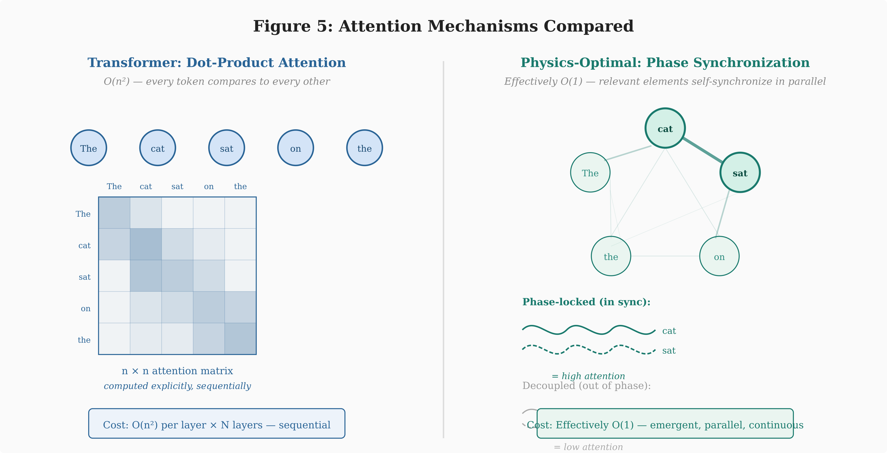

RESEARCH · MARCH 2026 · BENJAMIN YI
Beyond Transformers: Toward Physics-Optimal Architectures for Large Language Models
Abstract
The transformer architecture has dominated large language model (LLM) development since 2017, achieving remarkable results through deterministic matrix operations on GPU hardware followed by stochastic sampling at output. This paper argues that this paradigm represents a fundamental architectural mismatch: we simulate probabilistic cognition on deterministic silicon, paying enormous computational costs to approximate what physics provides for free. We examine the emerging class of Thermodynamic Stochastic Units (TSUs) and energy-based hardware, analyzing how they might reshape every stage of the LLM pipeline—from architecture design through training to inference. We then propose a first-principles framework for a physics-optimal language model architecture: a continuous dynamical system operating in learned latent space, leveraging timescale separation for hierarchical abstraction, phase synchronization for attention, and native stochastic dynamics for sampling. We argue that the ideal system would form complete “thought states” through attractor dynamics before serializing to tokens, inverting the autoregressive paradigm. While engineering challenges remain substantial, this analysis suggests that the transformer is a local optimum constrained by deterministic digital silicon rather than a global optimum for language modeling.
Keywords: thermodynamic computing, energy-based models, stochastic hardware, attractor dynamics, phase synchronization, large language models, transformer alternatives
1. INTRODUCTION
Large language models have transformed artificial intelligence, demonstrating capabilities in reasoning, code generation, creative writing, and general knowledge that were considered decades away just five years prior. The architecture underpinning this revolution—the transformer—has proven remarkably scalable, with performance improving predictably as parameters, data, and compute increase.
Yet the transformer carries a deep irony at its core. Language generation is fundamentally a stochastic process: given context, there are many valid continuations, and the model must navigate a probability distribution over possible next tokens. The transformer, however, is entirely deterministic. Every matrix multiplication, every attention computation, every layer normalization produces exact, reproducible outputs. The stochasticity that makes language models creative, diverse, and useful is bolted on at the very end—a pseudo-random number generator sampling from the distribution the deterministic machinery has laboriously computed.
This paper asks a simple question: what if the hardware itself were stochastic? What if, instead of spending trillions of floating-point operations to compute a probability distribution and then cheaply sampling from it, the physical substrate natively explored probability distributions as its fundamental mode of operation?
This question has been given concrete form by companies like Extropic, which are developing Thermodynamic Stochastic Units (TSUs)—analog chips where thermal noise is not a bug to be suppressed but the computational mechanism itself. The physics of these devices naturally performs what digital hardware must simulate: sampling from complex probability distributions defined by energy landscapes.
We proceed in four parts. Section 2 dissects the traditional LLM pipeline to identify where the deterministic-stochastic mismatch creates inefficiency. Section 3 examines how TSU-based hardware would alter each stage of this pipeline. Section 4 develops a first-principles argument for a physics-optimal architecture—one designed for the hardware rather than constrained by it. Section 5 discusses open challenges and implications.
2. THE TRADITIONAL LLM PIPELINE
2.1 Architecture
The transformer architecture, introduced by Vaswani et al. (2017), consists of stacked layers of multi-head self-attention and feed-forward networks. Each layer performs deterministic linear algebra: query-key-value projections, scaled dot-product attention, and learned nonlinear transformations. The architecture’s computational signature is dominated by matrix multiplications—precisely the operation that GPUs were designed to accelerate.
Self-attention has quadratic complexity in sequence length: every token attends to every other token, producing an n×n attention matrix for a sequence of n tokens. This is the single most expensive operation in the transformer and the primary bottleneck for scaling context windows. Various approximations (sparse attention, linear attention, sliding window) attempt to reduce this cost, but all sacrifice some representational capacity.
2.2 Training
Pre-training follows the next-token prediction objective: given a sequence of tokens, predict the probability distribution over the vocabulary for the next token. The model’s output is compared to the actual next token via cross-entropy loss, and gradients are backpropagated through the entire network to update weights. This process repeats billions of times across trillions of tokens.
The training process is entirely deterministic in its forward pass. Stochasticity enters only through data shuffling, dropout regularization, and random weight initialization. The fundamental learning algorithm—stochastic gradient descent and its variants—is itself a stochastic approximation, but the stochasticity comes from mini-batch sampling of the data, not from the compute substrate.
Fine-tuning and alignment (RLHF, DPO, RLAIF) further adjust weights to produce helpful, harmless, and conversational behavior. These stages modify the learned probability distributions but do not change the fundamental deterministic-compute-then-sample paradigm.
2.3 Inference
At inference time, the full cost of the architectural mismatch becomes apparent. For each token generated, the model performs a complete forward pass: the input sequence flows through every layer, every attention head computes its full quadratic attention pattern, every feed-forward network applies its nonlinear transformation. The output is a vector of logits over the entire vocabulary (typically 32,000–128,000 tokens), converted to probabilities via softmax.
Then—after all that deterministic computation—a sampling strategy introduces controlled randomness. Temperature scaling adjusts the peakedness of the distribution. Top-k sampling restricts the draw to the k most probable tokens. Top-p (nucleus) sampling restricts to the smallest set exceeding cumulative probability p. The actual random draw uses a PRNG—algorithmic, deterministic randomness seeded by system entropy.
The asymmetry is striking: billions of multiply-accumulate operations to produce a distribution, followed by a single random draw that takes nanoseconds. The computational cost is almost entirely in the deterministic machinery; the stochastic part is trivially cheap. This is backwards. The hard part should be defining the distribution; sampling from it should be the natural operation.

3. THE TSU ALTERNATIVE
3.1 Thermodynamic Stochastic Units
Thermodynamic Stochastic Units represent a fundamentally different approach to computation. Rather than suppressing thermal noise in transistors to achieve deterministic binary states, TSUs harness thermal fluctuations as the computational mechanism itself. A physical system in thermal equilibrium naturally samples from a Boltzmann distribution defined by its energy landscape—the probability of occupying a state is proportional to exp(−E/kT), where E is the energy of the state, k is Boltzmann’s constant, and T is temperature.
By engineering the energy landscape of an analog circuit—through tunable resistive, capacitive, and inductive elements—one can define arbitrary probability distributions and let the hardware physically sample from them. This is not simulation; it is the actual physics of the device. The sampling is truly random (quantum thermal noise), continuous in time, and essentially free in terms of additional computational cost.

3.2 Implications for the LLM Pipeline
If TSUs were used to build language models, every stage of the pipeline would change.
Architecture. Instead of layers of deterministic matrix operations, the architecture would be defined as an energy function over the model’s state space. The “weights” become parameters of this energy function—tunable couplings between stochastic units that shape the energy landscape. Low-energy states correspond to high-probability outputs; high-energy states to unlikely outputs.
Training. Rather than backpropagation through a deterministic computational graph, training would involve shaping the energy landscape such that correct outputs occupy deep energy minima. Algorithms like contrastive divergence (Hinton, 2002), equilibrium propagation (Scellier & Bengio, 2017), or score matching could replace backpropagation. These methods are naturally suited to stochastic hardware because they rely on sampling from the model’s distribution—something TSUs do natively.
Inference. This is where the paradigm shift is most dramatic. Instead of a massive deterministic forward pass followed by synthetic sampling, the physical system evolves toward low-energy states through its natural dynamics. Thermal fluctuations let the system explore the energy landscape, avoiding local minima and naturally sampling from the target distribution. Each generation step is the system settling into a state—potentially orders of magnitude faster and more energy-efficient than the matrix multiplications required by a transformer forward pass.
3.3 Practical Scaling Challenges
A naive energy-based approach would define the energy function over the entire input-output space—every token interacting with every other token simultaneously. For context windows exceeding 100,000 tokens, this would require a physical system of impractical scale. Three approaches mitigate this.
Hybrid autoregressive generation. Retain the token-by-token generation loop, but replace each forward pass with a TSU energy minimization. This is the most conservative adaptation and the most likely first-generation approach.
Chunked or hierarchical processing. Process blocks of tokens through the physical system and build up representations in stages, analogous to sliding-window attention in transformers.
Latent-space operation. Compress the input sequence into a compact latent representation via a conventional encoder, let the TSU operate entirely in latent space, then decode back to tokens. The physical system only needs to be as large as the latent space, not the full sequence. This approach, which we argue is ultimately optimal, is developed in Section 4.
4. A PHYSICS-OPTIMAL ARCHITECTURE
The approaches in Section 3 adapt existing architectures to new hardware. But this misses the deeper opportunity. If we design from first principles—asking what language generation actually requires and what physics actually provides—we arrive at a fundamentally different architecture.
4.1 What Language Generation Actually Requires
The autoregressive, token-by-token paradigm conflates two distinct processes: thinking and communicating. Humans do not think word by word. We form complete conceptual structures—gestalts—that represent an entire idea, argument, or response. The serialization into words is a communication bottleneck imposed by the channel (speech, writing), not a property of the thought itself.
Transformers have inherited this serialization as their fundamental computational structure. Each token requires a full forward pass. The model “thinks” serially to produce serial output. But thinking should be parallel; only output needs to be serial.
Language generation, viewed correctly, requires three capabilities: (i) the ability to maintain a compressed, continuously updated understanding of context; (ii) the ability to navigate a high-dimensional constraint space—coherence, truthfulness, relevance, style—to identify valid response trajectories; and (iii) the ability to serialize a chosen trajectory into a token sequence for communication. Only the third is inherently sequential.
4.2 What Physics Provides for Free
A physical dynamical system—a network of coupled stochastic elements—provides three computational primitives that transformers must laboriously approximate.
Timescale separation. In a coupled dynamical system, fast dynamics handle local interactions while slow dynamics handle global structure—automatically, in parallel, without architectural intervention. Language has precisely this hierarchical structure: syntax operates at fast, local timescales; semantics at medium timescales; discourse coherence and reasoning at slow, global timescales. A physical system with natural timescale separation handles all three levels concurrently. Transformers approximate this with stacked layers—a discrete, serial approximation of something continuous dynamics do in parallel.

Continuous attractor dynamics. Instead of computing a probability distribution and sampling a discrete token, a dynamical system settles into basins of attraction. Each basin represents a coherent “thought state”—not a single token, but a region in continuous latent space encoding an entire concept or response trajectory. Thermal noise explores neighboring basins, enabling creativity. Deep basins produce confident responses; shallow basins produce hedging and uncertainty. This is remarkably consistent with attractor-based models of cognition in computational neuroscience (Hopfield, 1982).
Figure 4 illustrates what this exploration looks like in practice. Rather than the simplified 1D cross-section shown in Figure 2, it presents a two-dimensional projection of the latent state space—closer to what one would observe if instrumenting a TSU chip at runtime. Multiple attractor basins coexist, each corresponding to a distinct response strategy (analytical, creative, factual, hedging). The system’s trajectory through this landscape is visible: entering from the input encoding, briefly captured by one basin, thermally kicked over a saddle point to explore alternatives, and ultimately converging on the basin whose energy profile best matches the query. The depth of each basin—rendered as contour density—corresponds directly to the confidence and stability of that response mode.

Resonance as attention. This may be the most consequential insight. The reason transformers are computationally expensive is O(n²) self-attention: every token computes its relevance to every other token via dot-product similarity. In a network of coupled oscillators, relevant components naturally phase-synchronize—their oscillations lock into coherent patterns. Irrelevant components decouple. This is attention, implemented by physics, operating in parallel across the entire network, without computing a single attention matrix. The query-key-value framework is a discrete, sequential approximation of something coupled oscillators do natively and continuously.

4.3 The Proposed Architecture
Combining these observations, we propose the following architecture for a physics-optimal language model.
State space. The model operates in a learned continuous latent space, not in token space. This latent space is the state space of the physical dynamical system. Its dimensionality is determined by the complexity of the language modeling task, not by vocabulary size or sequence length.
Physical substrate. The dynamical system consists of a network of coupled stochastic elements. The coupling strengths between elements are the learned parameters—analogous to weights in a neural network. These couplings define the energy landscape of the system.
Input encoding. An encoder (which may be conventional digital hardware) maps input tokens into an initial state of the dynamical system, setting initial conditions from which the physics evolves.
Dynamics. The physical system evolves according to its natural dynamics. Fast oscillatory modes resolve local syntactic coherence. Medium-timescale dynamics establish semantic consistency. Slow modes handle discourse-level reasoning. Phase synchronization implements dynamic attention. Thermal fluctuations maintain exploration, preventing collapse to a single deterministic attractor.
Thought formation. The system settles into a basin of attraction representing a complete “thought”—the full response trajectory encoded in latent space. This happens in parallel, not token by token. Thinking is complete before serialization.
Output decoding. A decoder reads the continuous latent state and serializes it into tokens. This is the only inherently sequential step—a readout operation fundamentally cheaper than the parallel thinking phase.
4.4 Comparison with Existing Architectures
| Dimension | Transformer | TSU Hybrid | Physics-Optimal |
|---|---|---|---|
| Compute | Deterministic | Stochastic | Stochastic |
| Space | Token | Token / hybrid | Latent |
| Attention | O(n²) dot-product | Energy coupling | Phase synchronization |
| Sampling | PRNG post-hoc | Native thermal | Native thermal |
| Generation | Serial | Serial | Parallel → serial |
| Timescales | Stacked layers | Energy levels | Natural separation |
| Training | Backpropagation | Contrastive / eq. prop. | Landscape shaping |
5. DISCUSSION
5.1 The Transformer as a Local Optimum
The argument presented here does not diminish the transformer’s achievements. The transformer is a brilliant architecture—arguably the best possible architecture for the hardware it was designed to run on. GPUs excel at dense matrix multiplications, and the transformer is structured to maximally exploit this capability.
But “best for this hardware” is not “best possible.” The transformer is a local optimum in the space of architectures, constrained to the manifold of designs that run efficiently on deterministic digital silicon. If the hardware constraint changes—if stochastic, analog, continuous-time computing becomes viable—the optimal architecture may be radically different.
5.2 Engineering Challenges
Significant obstacles stand between the architecture proposed here and practical implementation.
Training stochastic systems. Backpropagation through a deterministic computational graph is well-understood and highly optimized. Training energy-based models at the scale required for language modeling—billions of parameters, trillions of tokens—is an open research problem. Methods like equilibrium propagation show theoretical promise but have not been demonstrated at scale.
Analog precision. Digital hardware provides exact arithmetic within floating-point precision. Analog circuits are subject to manufacturing variation, temperature drift, and noise beyond the desired thermal fluctuations. Whether analog precision suffices for language modeling representations is unknown.
Scaling coupled systems. The number of coupled elements determines representational capacity. Scaling to billions of equivalent parameters in a coupled analog system—while maintaining coherent dynamics and controllable energy landscapes—is a formidable engineering challenge.
Encoder-decoder interface. The architecture requires an interface between digital and analog domains. This analog-digital conversion must be fast, accurate, and energy-efficient to avoid creating a new bottleneck.
5.3 Cognitive Parallels
The proposed architecture bears a closer resemblance to biological neural computation than the transformer does. Brains are stochastic, analog, continuous-time dynamical systems operating across multiple timescales simultaneously. Neural populations form attractor states representing concepts and decisions. Oscillatory dynamics and phase synchronization are widely believed to implement attention and binding in cortical circuits. The brain forms complete representations before serializing them into speech.
This convergence is suggestive but should not be overstated. Biological plausibility is not a design criterion. Nevertheless, the fact that both first-principles physical reasoning and biological observation point toward similar computational primitives—attractor dynamics, timescale separation, oscillatory attention—strengthens the case that these are fundamentally good strategies for information processing.
5.4 Implications for the Field
If stochastic hardware matures, the implications extend beyond architecture. The entire machine learning stack—training frameworks, inference servers, benchmarking methodology—is built around deterministic, discrete-time, digital computation. A transition to stochastic, continuous-time, analog hardware would require rethinking the entire ecosystem.
More immediately, even on current hardware, there may be value in exploring architectures that more directly model the stochastic, multi-timescale, attractor-based properties of language. Diffusion-based language models, energy-based text generation, and continuous-space language models all represent steps in this direction. These approaches may offer both near-term improvements and a smoother transition path to future stochastic hardware.
6. CONCLUSION
The transformer architecture achieves remarkable performance by using deterministic hardware to approximate a stochastic process. This paper argues that this approximation, while brilliantly engineered, is not the end of the story. Thermodynamic stochastic hardware offers the possibility of computing with probability distributions natively, collapsing the distinction between model computation and sampling that defines the current paradigm.
Designing from first principles leads to an architecture fundamentally different from the transformer: a continuous dynamical system operating in learned latent space, forming complete thought states through attractor dynamics before serializing to tokens, implementing attention through physical resonance rather than quadratic matrix operations, and handling hierarchical linguistic structure through natural timescale separation rather than stacked discrete layers.
Whether this vision is realizable depends on engineering advances in stochastic hardware, energy-based training algorithms, and analog-digital interfaces. But the theoretical analysis is clear: the transformer was the best we could do on deterministic digital silicon. If the hardware changes, the optimal architecture changes with it. And the architecture that physics suggests looks nothing like a transformer.
References
Ackley, D. H., Hinton, G. E., & Sejnowski, T. J. (1985). A learning algorithm for Boltzmann machines. Cognitive Science, 9(1), 147–169.
Hinton, G. E. (2002). Training products of experts by minimizing contrastive divergence. Neural Computation, 14(8), 1771–1800.
Hopfield, J. J. (1982). Neural networks and physical systems with emergent collective computational abilities. Proceedings of the National Academy of Sciences, 79(8), 2554–2558.
LeCun, Y., Chopra, S., Hadsell, R., Ranzato, M., & Huang, F. (2006). A tutorial on energy-based learning. In Predicting Structured Data. MIT Press.
Scellier, B., & Bengio, Y. (2017). Equilibrium propagation: Bridging the gap between energy-based models and backpropagation. Frontiers in Computational Neuroscience, 11, 24.
Vaswani, A., Shazeer, N., Parmar, N., Uszkoreit, J., Jones, L., Gomez, A. N., Kaiser, Ł., & Polosukhin, I. (2017). Attention is all you need. Advances in Neural Information Processing Systems, 30.